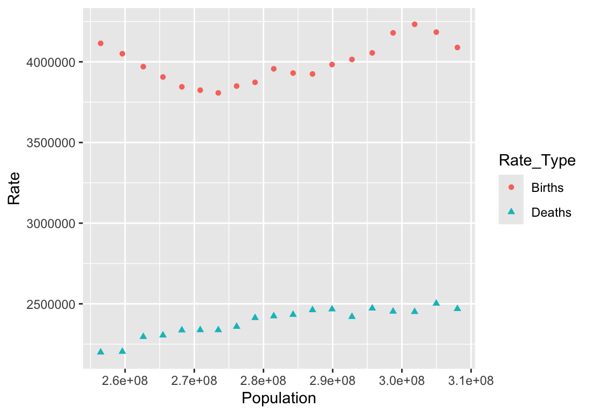
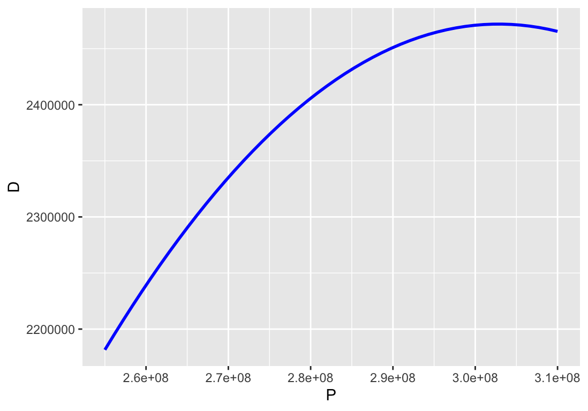
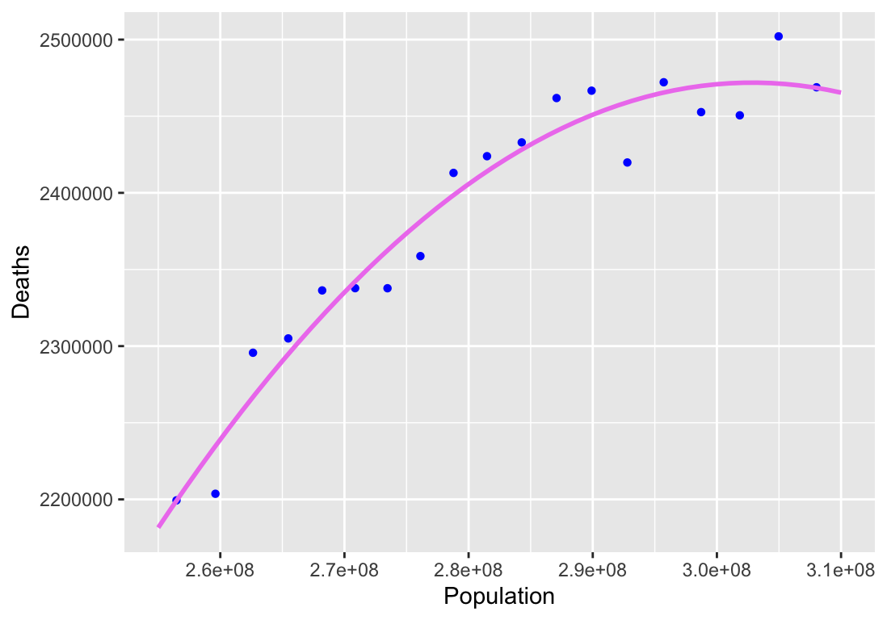
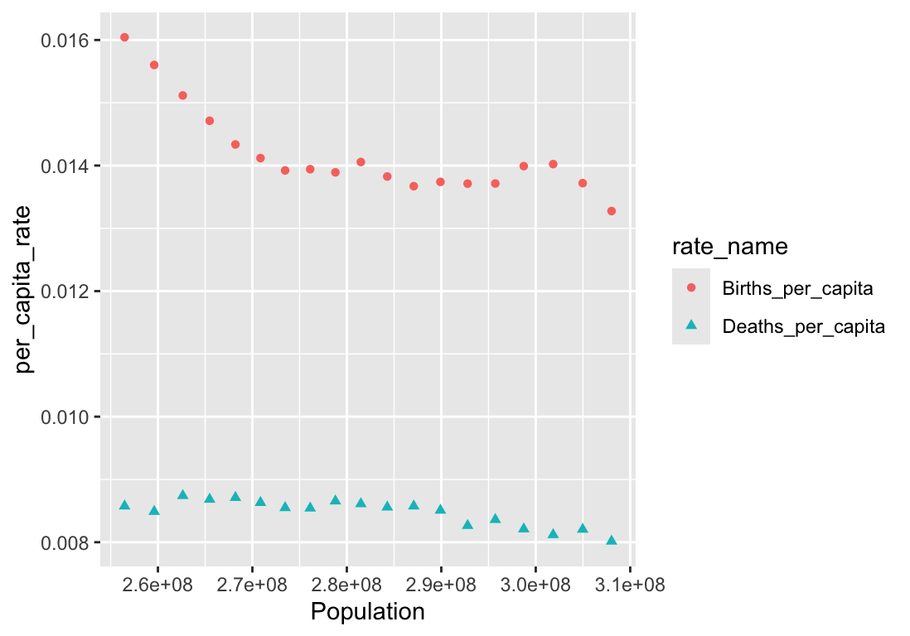
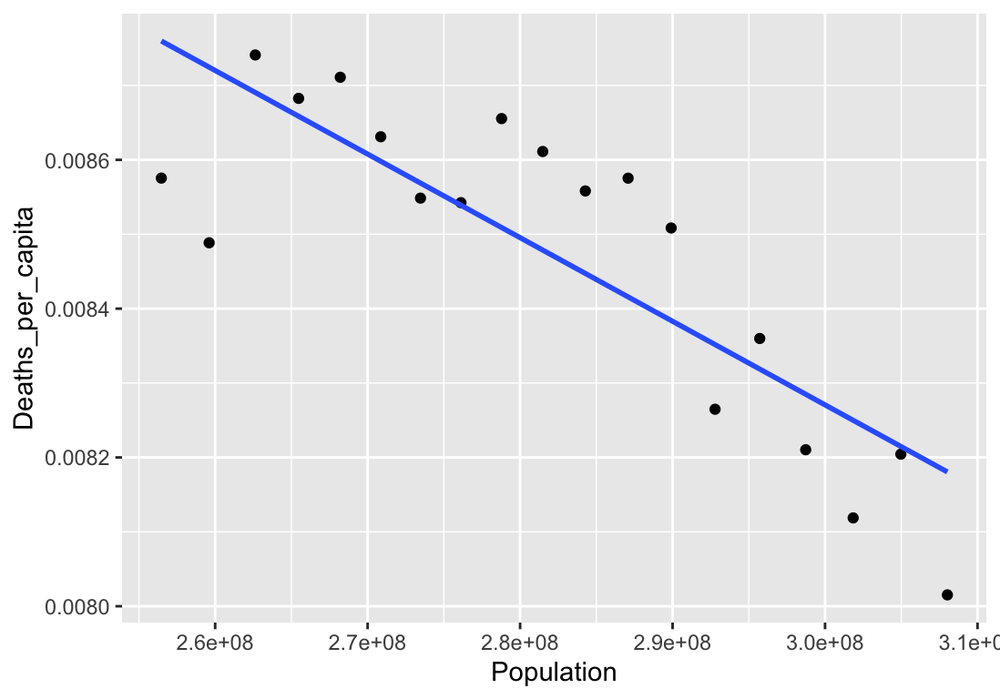

Section 1.6 Relations between Variables
In the previous section, we explored the US census population data set as the variables of
Births, Deaths, and Populations changed with Year. Mathematical models are often built by exploring the relations between the state variables themselves other than time. How do birth and death rates relate to the population size? We can start to visualize this by creating a plot.We will work with the same data file
US-population-data.csv. Using the same basic pattern as the previous work, we will load the data into R using read_csv and then restrict to the years of interest using filter. This time we will want to be plotting points \((x,y)\) where \(x\)-values correspond to the Population values and \(y\)-values correspond to the Births and Deaths. As there are two distinct types of \(y\)-values, we will again use pivot_longer to create a tidy version of the data for plotting.library(readr) # To load CSV files (read_csv)
library(dplyr) # To reorganize (filter)
library(tidyr) # To tidy data (pivot_longer)
library(ggplot2) # To work with graphs (ggplot)
# Load the data from a file
US_population_data <- read_csv("US-population-data.csv",
skip = 5)
# Focus on the the years 1991-2010
focus_population_data <- filter(US_population_data, Year >= 1991 & Year < 2010)
# Reorganize to plot Births, Deaths vs Population
pivot_longer(focus_population_data,
cols = c(Births, Deaths), # these columns get separate rows
names_to = "Rate_Type", # category column
values_to = "Rate" # column for actual values
) |>
# And pipe the resulting frame into ggplot
ggplot(mapping = aes(x = Population, y = Rate,
color = Rate_Type, shape = Rate_Type)
) +
geom_point()

From the resulting figure, we can see that the birth rate goes up and down in an unusual manner. This is typical in human populations, where birth rates are affected significantly by socioeconomic and political conditions. The death rate on the other hand appears to steadily increase with an increase in the population size. So we will spend some time in this section exploring that relationship.
The simplest models for relationships are constant and linear relations. Let us look at the possibility of a linear relation between the death rate and the population size. We can add a best-fit line to our data and see what it looks like. The following script assumes that we have already imported the data as shown in the previous listing. Because we are looking at just the
Deaths for \(y\)-values, we will revert back to the original data structure.ggplot(focus_population_data,
mapping = aes(x = Population, y = Deaths)
) +
geom_point(color = "green") +
geom_smooth(method = "lm", formula = y ~ x, se = FALSE)
The geometric object that was added is
geom_smooth, which has several different methods. The method we used is lm which stands for “linear model”. The associated formula option indicates that we want a linear model where \(y\) is a linear function of \(x\text{.}\) The option se = FALSE indicates that we do not want to include the “standard error” as part of our linear model. Change this to TRUE to see the effect, which essentially shows how much confidence we have that given the data, a linear model would be predicting a linear model values.Adding the graph of the line does not show us the formula for the model. We need to make a new call to find the values. Before introducing the command, recall that the standard high school representation of a line uses the form \(y = mx + b\text{,}\) where \(m\) is the slope of the line and \(b\) is the \(y\)-intercept, meaning the point \((0,b)\) is on the line. The symbols \(m\) and \(b\text{,}\) although common, are not actually standard. For example, in physics, \(m\) more commonly refers to mass. We could instead use a model \(y = a + bx\text{,}\) and with this representation, \(a\) is the \(y\)-intercept and \(b\) is the slope.
In R, the method that we use to find the best linear model is
lm. The first argument is formula, which wants to know which columns in our data are related. The dependent variable goes on the left of the formula. The right side of the formula is going to be a sum of columns that each are included with their individual slope terms. And the two sides of the formula are connected with a tilde symbol ~. In our example, we want a model Deaths ~ Population because we want to predict Deaths (dependent variable) as a linear function of Population (explanatory or independent variable). The result of our call will be a structure that gives an intercept and a coefficient for Population. (Results are shown following the code that you input.)lm(formula = Deaths ~ Population, data = focus_population_data)
Call: lm(formula = Deaths ~ Population, data = focus_population_data) Coefficients: (Intercept) Population 9.160e+05 5.215e-03
The results of the linear model calculation tell us that the intercept is 9.160e+05 and the coefficient for
Population is 5.215e-03. Using these values in the equation of a line, and using \(P\) for Population and \(D\) for Deaths, we get a model equation
\begin{equation*}
D = 9.16 \times 10^5 + 5.215 \times 10^{-3} \cdot P.
\end{equation*}
Another very important linear model is a proportional model. This corresponds to a linear model where the intercept is required to be 0. The equation \(y = 2 + 3x\) is a linear model but is not proportional. The equation \(y = 0 + 3x\text{,}\) or more simply \(y = 3x\text{,}\) is a proportional model. We can find the best proportinal model using
lm by using a formula with structure y ~ 0 + x, and by explicitly adding “0”, we force the intercept value to be 0 and then find the best matching slope coefficients. The following listing shows that our best proportional regression model would be given by
\begin{equation*}
D = 0.008455 P.
\end{equation*}
lm(formula = Deaths ~ 0 + Population, data = focus_population_data)
Call: lm(formula = Deaths ~ 0 + Population, data = focus_population_data) Coefficients: Population 0.008455
What do we do about other models? For example, can we find the best quadratic model? Some tools, like
Desmos, make this very easy. R, which was written as a statistical software package, was designed to work with data sets and not formulas. However, we can work around this quite easily.If our data set has multiple explanatory variables \(X_1\text{,}\) \(X_2\text{,}\) and \(X_3\) for a dependent variable \(Y\text{,}\) the generalization of a simiple linear model takes the form
\begin{equation*}
Y = a + b_1 X_1 + b_2 X_2 + b_3 X_3\text{.}
\end{equation*}
We still have an intercept \(a\) along with separate slope coefficients for each of the explanatory variables. To find the best fit model of this form, we would use
formula = Y ~ X1 + X2 + X3.To get models like quadratics or other polynomials, we can find the coefficients we need by engineering new columns in our data set. For example, a quadratic model for our death rate would have the form
\begin{equation*}
D = a + b P + c P^2\text{.}
\end{equation*}
Our data set already has a column for \(P\) with
Population. We need to generate a new column containing \(P^2\text{.}\) The function that adds new calculated columns is mutate command in the dplyr library. We will use the pipe method to illustrate the steps we need.expand_data <- focus_population_data |> # Start with our data
select(P = Population, D = Deaths) |> # Keep only P and D
mutate(P2 = P^2) # Add column for P^2
lm(formula = D ~ P + P2, data = expand_data)
Call: lm(formula = D ~ P + P2, data = expand_data) Coefficients: (Intercept) P P2 -9.163e+06 7.684e-02 -1.269e-10
As a result of this calculation, our best quadratic model given the data is given by the model
\begin{equation*}
D = -9.163 \times 10^6 + 7.684 \times 10^{-2} P - 1.269 \times 10^{-10} P^2\text{.}
\end{equation*}
As you can see, the summary of our calculation only gave four significant digits to each of the coefficients. When working with population sizes on the order of \(10^8\) (hundreds of millions), small changes in the coefficients can result in fairly noticable differences in calculated values. If we want to have more digits, we need to look at the returned structure directly and not just the summary that is provided by the call. Assign a name to the result of the
lm call and then examine the coefficients stored in the result.D_model <- lm(formula = D ~ P + P2, data = expand_data)
D_model$coefficients
(Intercept) P P2 -9.163022e+06 7.683889e-02 -1.268641e-10
Again, because R was not designed to work with formulas but with data, there is not an automatic method to draw the curve we want based on this best quadratic fit. We need to know how to graph a function instead of data. The graph of a continuous function can be approximated by using a sequence of calculated points connected together to form a curve. Our task is to do the following:
- Identify our domain interval,
- Create a sequence of \(x\)-values from that interval,
- Use formula to calculate \(y\)-values for each point,
- Graph the calculated \((x,y)\) points connected.
We will first generate a graph without trying to connect it to our data.
# Create the sequence of x-values
x_vals <- seq(from = 2.55e8, to = 3.10e8, length.out = 50)
# Extract the coefficients for an easier name to calculate the y-values
c <- D_model$coefficients
y_vals <- c[1] + c[2] * x_vals + c[3] * x_vals^2
# Put the data in a table and pipe the result to ggplot
tibble(P = x_vals, D = y_vals) |>
ggplot(mapping = aes(x = P, y = D)) +
geom_path(color = "blue", linewidth = 2)

In order to combine graphs that come from different data sets, we will create geometric layers resulting from different
data features. This means that when we open up our graphics layout using ggplot, we should not pass a common dataset for all of the layers. Instead, we pass an empty dataset indicator NULL. We can still name our axes in the aesthetics. Then when we generate the geometric layers, we will specify our datasets and indicate the columns for \((x,y)\) in each case separately.ggplot(data = NULL,
mapping = aes(x = Population, y = Deaths)) +
geom_point(data = focus_population_data,
aes(x = Population, y = Deaths),
color = "blue", shape = 16) +
geom_path(data = tibble(P = x_vals, D = y_vals),
aes(x = P, y = D),
color = "violet", linewidth = 1)

Next, we want to look at derived state variables. (Note: “derived” means generated from and is not related to the calculus idea of “derivative”.) For populations, we are often interested in per capita rates, which are calculated by taking a total rate (like a birth rate or death rate) and dividing it by the population size. This gives the number of births or deaths per year per individual.
We add new columns to our dataset using
mutate to represent these new values. Let’s take a look at how per capita birth and death rates relate to population size.focus_population_data |>
mutate(Births_per_capita = Births / Population,
Deaths_per_capita = Deaths / Population) |>
pivot_longer(cols = c(Births_per_capita, Deaths_per_capita),
names_to = "rate_name",
values_to = "per_capita_rate") |>
ggplot(mapping = aes(x = Population, y = per_capita_rate,
color = rate_name, shape = rate_name)) +
geom_point()

This new view suggests that perhaps the population saw a transition in per capita birth rates for a time and then settled down to something approximately constant around 0.014 (births per individual per year), or 14 births per year per thousand individuals. The per capita death rate possibly was seeing a gradual decline. Because death rates are based on economics as well as medical innovations, we are unlikely going to want to attribute the falling death rate to the increasing population. However, from a modeling perspective, we could ignore this good sense and determine what the relationship is if we wanted to attribute all of the change to population size.
work_data <- focus_population_data |>
mutate(Births_per_capita = Births / Population,
Deaths_per_capita = Deaths / Population)
death_pc_model <-
lm(formula = Deaths_per_capita ~ Population, data = work_data)
death_pc_model$coefficients
ggplot(data = work_data,
mapping = aes(x = Population, y = Deaths_per_capita)) +
geom_point() +
geom_smooth(method = "lm", formula = y ~ x, se = FALSE)
(Intercept) Population 1.164158e-02 -1.123642e-11
